、 、
译者
@SeanCheney ：
尽管 IBM 的深蓝超级计算机在 1996 年击败了国际象棋世界冠军加里·卡斯帕罗夫
卷积神经网络
本章会介绍 CNN 的起源
视神经结构
David H. Hubel 和 Torsten Wiesel 在 1958 年和 1959 年在猫的身上做了一系列研究
另外
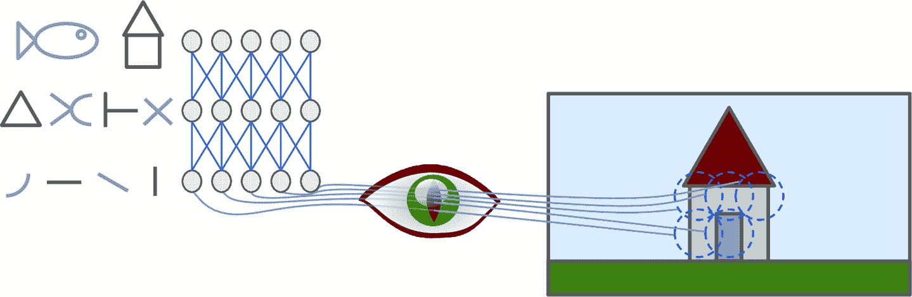
图 14-1 视神经中生物神经元可以对感受野中的图案作反应
对视神经的研究在 1980 年启发了神经认知学
笔记
为什么不使用全连接层的深度神经网络来做图像识别呢 ： 这是因为 ？ 尽管这种方案在小图片 ， 比如 MNIST （ 任务上表现不错 ） 但由于参数过多 ， 在大图片任务上表现不佳 ， 举个例子 。 一张`100 × 100·像素的图片总共有 10000 个像素点 ， 如果第一层有 1000 个神经元 ， 如此少的神经元 （ 已经限制信息的传输量了 ， ） 那么就会有 1000 万个连接 ， 这仅仅是第一层的情况 。 CNN 是通过部分连接层和权重共享解决这个问题的 。 。
卷积层
卷积层是 CNN 最重要的组成部分
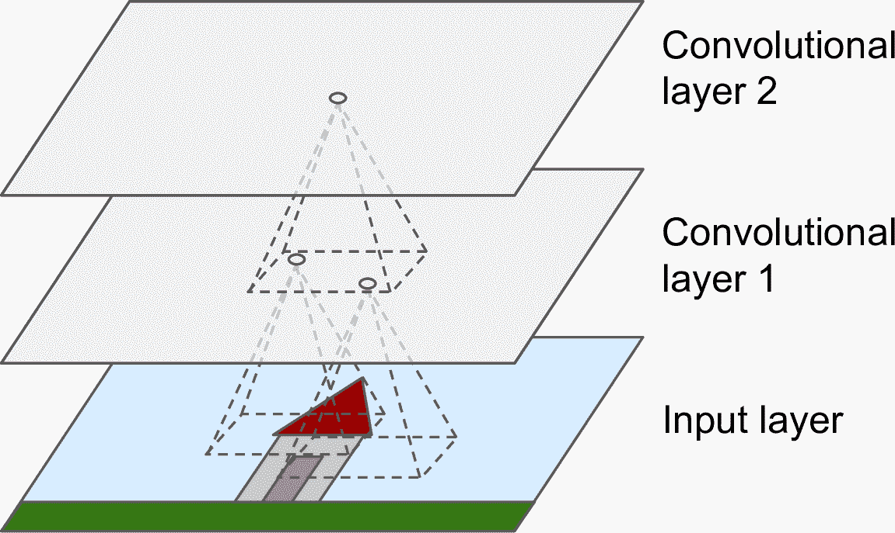
图 14-2 有方形局部感受野的 CNN 层
笔记
我们目前所学过的所有多层神经网络的层 ： 都是由一长串神经元组成的 ， 所以在将图片输入给神经网络之前 ， 必须将图片打平成 1D 的 ， 在 CNN 中 。 每个层都是 2D 的 ， 更容易将神经元和输入做匹配 ， 。
位于给定层第i行j列的神经元i行到第i + fh – 1行j列到第j + fw – 1列的输出相连f[h]和f[w]是感受野的高度和宽度
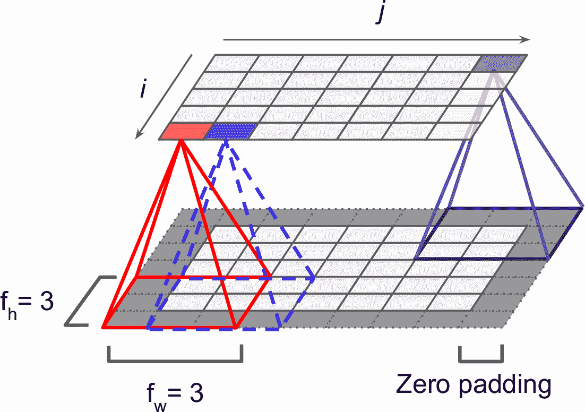
图 14-3 卷积层和零填充的连接
也可以通过间隔感受野5 × 7的输入层3 × 4的层3 × 3的感受野i行j列的神经元i × sh到i × sh + fh – 1行j × sw到j × sw + fw – 1列的神经元的输出s[h]和s[w]分别是垂直和水平步长
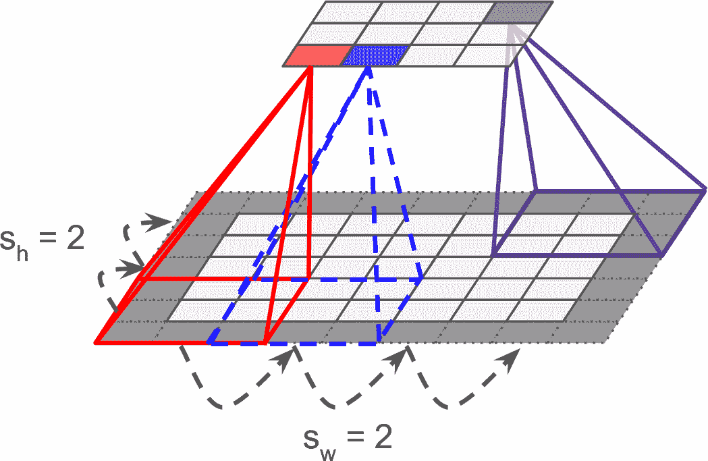
图 14-2 使用大小为 2 的步长降维
过滤器
神经元的权重可以表示为感受野大小的图片7 × 7的矩阵
如果卷积层的所有神经元使用同样的垂直过滤器
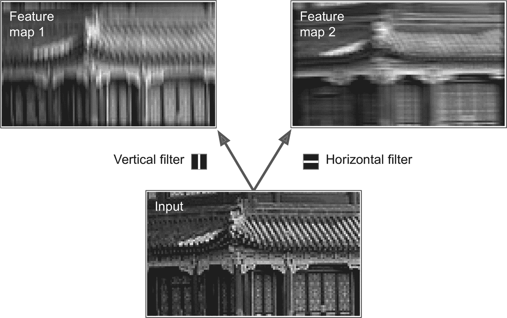
图 14-5 应用两个不同的过滤器
堆叠多个特征映射
简单起见
笔记
同一特征映射中的所有神经元共享一套参数 ： 极大地减少了模型的参数量 ， 当 CNN 认识了一个位置的图案 。 就可以在任何其它位置识别出来 ， 相反的 。 当常规 DNN 学会一个图案 ， 只能在特定位置识别出来 ， 。
输入图像也是有多个子层构成的
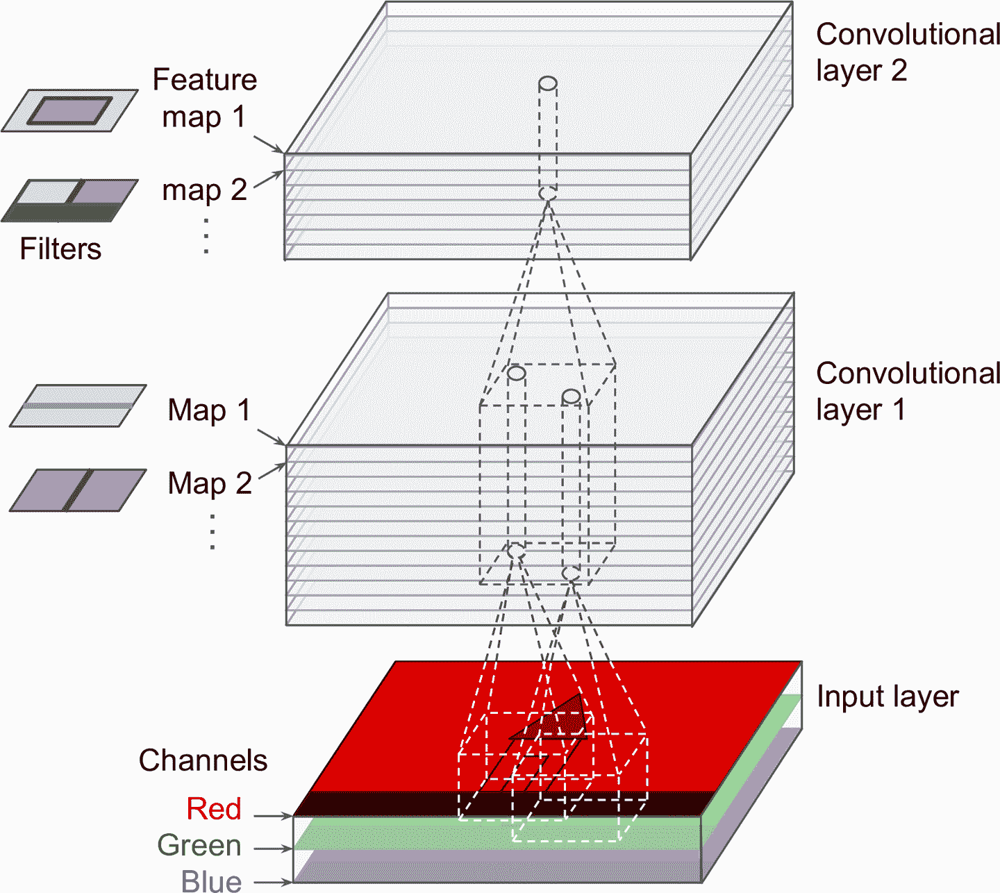
图 14-6 有多个特征映射的卷积层
特别的l的特征映射k的第i行j列的神经元l-1的i × sh到i × sh + fh – 1行j × sw到j × sw + fw – 1列的所有特征映射i行j列的神经元
等式 14-1 用一个大等式总结了前面的知识
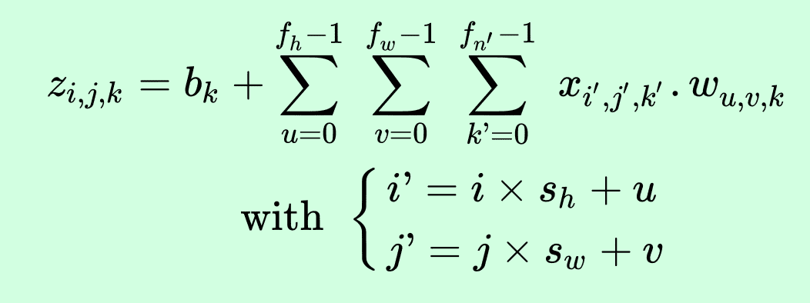
公式 14-1 计算卷积层中给定神经元的输出
在这个等式中
-
z[i, j, k]是卷积层l中第i行、 j列、 k的输出。 -
s[h]和s[w]是垂直和水平步长， f[h]和f[w]是感受野的高和宽， f[n']是前一层l-1的特征映射数。 -
x[i', j', k']是卷积层l-1中第i'行、 j'列、 k'的输出（ ， k'） 。 -
b[k]是特征映射k的偏置项。 ， 。 -
w[u, v, k′ ,k]是层l的特征映射k的任意神经元， u、 v（ ） 、 k'的输入， 。
TensorFlow 实现
在 TensorFlow 中[高度<span class="bd-box"><h-char class="bd bd-beg"><h-inner>，</h-inner></h-char></span>宽度<span class="bd-box"><h-char class="bd bd-beg"><h-inner>，</h-inner></h-char></span>通道]的 3D 张量表示的[批次大小<span class="bd-box"><h-char class="bd bd-beg"><h-inner>，</h-inner></h-char></span>高度<span class="bd-box"><h-char class="bd bd-beg"><h-inner>，</h-inner></h-char></span>宽度<span class="bd-box"><h-char class="bd bd-beg"><h-inner>，</h-inner></h-char></span>通道][f[h], f[w], f[n'], f[n]][f[n]]
看一个简单的例子load_sample_image()加载了两张图片
from sklearn.datasets import load_sample_image
# 加载样本图片
china = load_sample_image("china.jpg") / 255
flower = load_sample_image("flower.jpg") / 255
images = np.array([china, flower])
batch_size, height, width, channels = images.shape
# 创建两个过滤器
filters = np.zeros(shape=(7, 7, channels, 2), dtype=np.float32)
filters[:, 3, :, 0] = 1 # 垂直线
filters[3, :, :, 1] = 1 # 水平线
outputs = tf.nn.conv2d(images, filters, strides=1, padding="same")
plt.imshow(outputs[0, :, :, 1], cmap="gray") # 画出第 1 张图的第 2 个特征映射
plt.show()
逐行看下代码
-
每个颜色通道的像素强度是用 0 到 255 来表示的
， ， 。 -
然后创建了两个
7 × 7的过滤器（ ， ） 。 -
使用
tf.nn.conv2d()函数， 。 （ padding="same"） ， 。 -
最后
， （ ） 。
tf.nn.conv2d()函数这一行
-
images是一个输入的小批次（ ） 。 -
filters是过滤器的集合（ ） 。 -
strides等于 1， ， （ s[h]和s[w]） ， 。 （ ） （ ） 。 -
padding必须是"same"或"valid"： -
如果设为
"same"， 。 ， 。 ： ， （ ） ， （ 13 / 5 = 2.6， ） ， 。 strides=1时， （ ） ， same的来历。 -
如果设为
"valid"， ， ， ， （ ， ） 。 （ ） ， valid的来历。
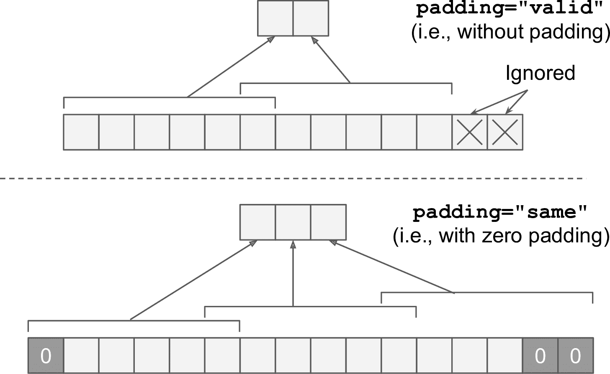
图 14-7 Padding="same"或"valid"
这个例子中keras.layers.Conv2D层
conv = keras.layers.Conv2D(filters=32, kernel_size=3, strides=1,
padding="same", activation="relu")
这段代码创建了一个有 32 个过滤器的Conv2D层3 × 3"same"填充
内存需求
CNN 的另一个问题是卷积层需要很高的内存
比如5 × 5个过滤器的卷积层150 × 100150 × 100的 RGB 图片(5 × 5 × 3 + 1) × 200 = 15200150 × 100个神经元5 × 5 × 3 = 75个输入的权重和200 × 150 × 100 × 32 = 96百万比特
在做推断时
提示
如果因为内存不够发生训练终端 ： 可以降低批次大小 ， 另外 。 可以使用步长降低纬度 ， 或去掉几层 ， 或者 。 你可以使用 16 位浮点数 ， 而不是 32 位浮点数 ， 或者 。 可以将 CNN 分布在多台设备上 ， 。
接下来
池化层
明白卷积层的原理了
和卷积层一样2 × 2的池化核
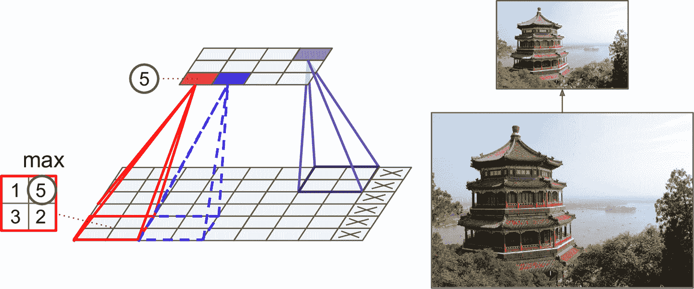
图 14-8 最大池化层2 × 2的池化核
笔记
池化层通常独立工作在每个通道上 ： 所以输出深度和输入深度相同 ， 。
除了可以减少计算2 × 2核
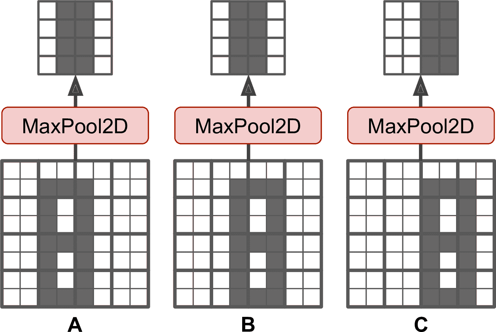
图 14-9 小平移不变性
但是2 × 2
TensorFlow 实现
用 TensorFlow 实现最大池化层很简单2 × 2"valid"填充
max_pool = keras.layers.MaxPool2D(pool_size=2)
要创建平均池化层AvgPool2D
池化层还可以沿着深度方向做计算
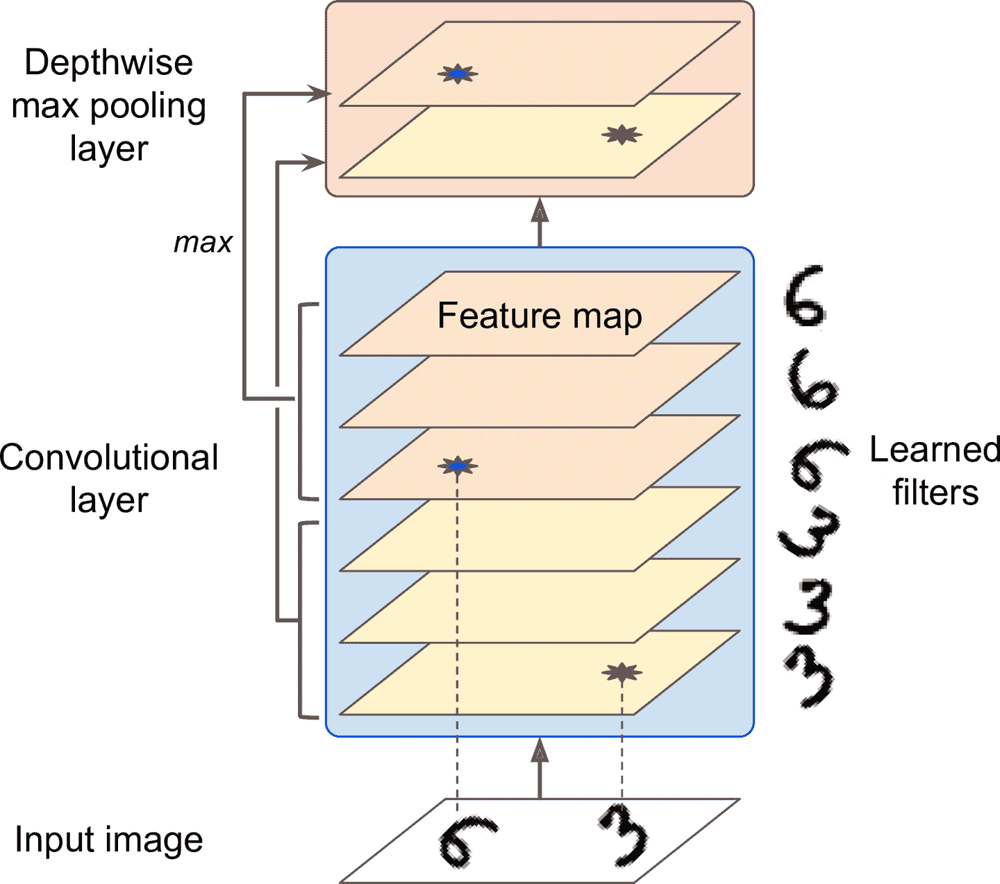
图 14-10 深度最大池化层可以让 CNN 学习到多种不变性
Keras 没有深度方向最大池化层tf.nn.max_pool()
output = tf.nn.max_pool(images,
ksize=(1, 1, 1, 3),
strides=(1, 1, 1, 3),
padding="valid")
如果想将这个层添加到 Keras 模型中Lambda层
depth_pool = keras.layers.Lambda(
lambda X: tf.nn.max_pool(X, ksize=(1, 1, 1, 3), strides=(1, 1, 1, 3),
padding="valid"))
最后一中常见的池化层是全局平均池化层
global_avg_pool = keras.layers.GlobalAvgPool2D()
它等同于下面的Lambda层
global_avg_pool = keras.layers.Lambda(lambda X: tf.reduce_mean(X, axis=[1, 2]))
介绍完 CNN 的组件之后
CNN 架构
CNN 的典型架构是将几个卷积层叠起来
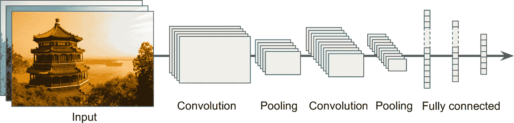
图 14-11 典型的 CNN 架构
提示
常犯的错误之一 ： 是使用过大的卷积核 ， 例如 。 要使用一个卷积层的核是 ， 5 × 5再加上两个核为 ， 3 × 3的层这样参数不多 ： 计算也不多 ， 通常效果也更好 ， 第一个卷积层是例外 。 可以有更大的卷积核 ： 例如 （ 5 × 5） 步长为 2 或更大 ， 这样可以降低图片的空间维度 ： 也没有损失很多信息 ， 。
下面的例子用一个简单的 CNN 来处理 Fashion MNIST 数据集
model = keras.models.Sequential([
keras.layers.Conv2D(64, 7, activation="relu", padding="same",
input_shape=[28, 28, 1]),
keras.layers.MaxPooling2D(2),
keras.layers.Conv2D(128, 3, activation="relu", padding="same"),
keras.layers.Conv2D(128, 3, activation="relu", padding="same"),
keras.layers.MaxPooling2D(2),
keras.layers.Conv2D(256, 3, activation="relu", padding="same"),
keras.layers.Conv2D(256, 3, activation="relu", padding="same"),
keras.layers.MaxPooling2D(2),
keras.layers.Flatten(),
keras.layers.Dense(128, activation="relu"),
keras.layers.Dropout(0.5),
keras.layers.Dense(64, activation="relu"),
keras.layers.Dropout(0.5),
keras.layers.Dense(10, activation="softmax")
])
逐行看下代码
-
第一层使用了 64 个相当大的过滤器
（ 7 × 7） ， ， 。 input_shape=[28, 28, 1]， 28 × 28像素的， （ ， ） 。 -
接着
， ， -
接着
， ： ， 。 ， （ ） 。 -
要注意
， ， （ ， ， ） ： （ ， ） ， 。 ， ： ， ， 、 、 。 -
然后是全连接网络
， 。 ， ， 。 ， ， 。
这个 CNN 可以在测试集上达到 92% 的准确率
过去几年
我们先看看经典的 LeNet-5 架构
LeNet-5
LeNet-5 也许是最广为人知的 CNN 架构
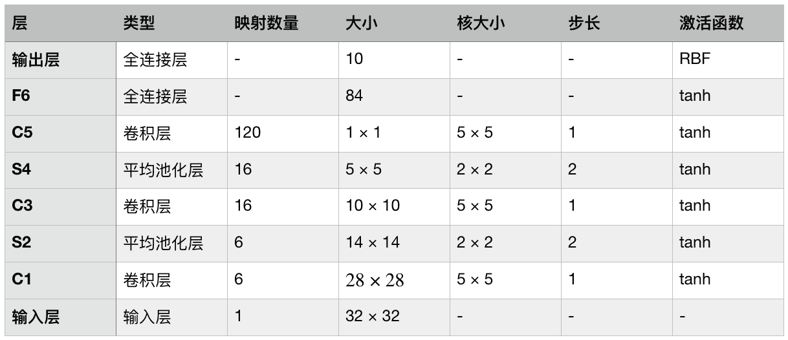
表 14-1 LeNet-5 架构
有一些点需要注意
-
MNIST 图片是
28 × 28像素的， ， ， 32 × 32像素， 。 ， ， 。 -
平均池化层比一般的稍微复杂点
： ， （ ） ， （ ） ， 。 -
C3 层映射中的大部分神经元
， （ ） 。 -
输出层有点特殊
： ， 。 。 ， ， ， 。
Yann LeCun 的网站展示了 LeNet-5 做数字分类的例子
AlexNet
AlexNet CNN 架构以极大优势
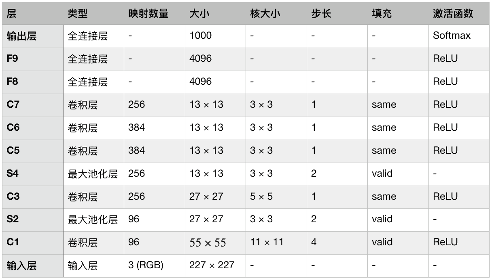
表 14-2 AlexNet 架构
为了降低过拟合
数据增强
数据增强是通过生成许多训练实例的真实变种
来人为增大训练集 ， 因为可以降低过拟合 。 成为了一种正则化方法 ， 生成出来的实例越真实越好 。 最理想的情况 ： 人们无法区分增强图片是原生的还是增强过的 ， 简单的添加白噪声没有用 。 增强修改要是可以学习的 ， 白噪声不可学习 （ ） 。 例如
可以轻微偏移 ， 旋转 、 缩放原生图 、 再添加到训练集中 ， 见图 14-12 （ ） 这么做可以使模型对位置 。 方向和物体在图中的大小 、 有更高的容忍度 ， 如果想让模型对不同光度有容忍度 。 可以生成对比度不同的照片 ， 通常 。 还可以水平翻转图片 ， 文字不成 （ 不对称物体也不成 、 ） 通过这些变换 。 可以极大的增大训练集 ， 。 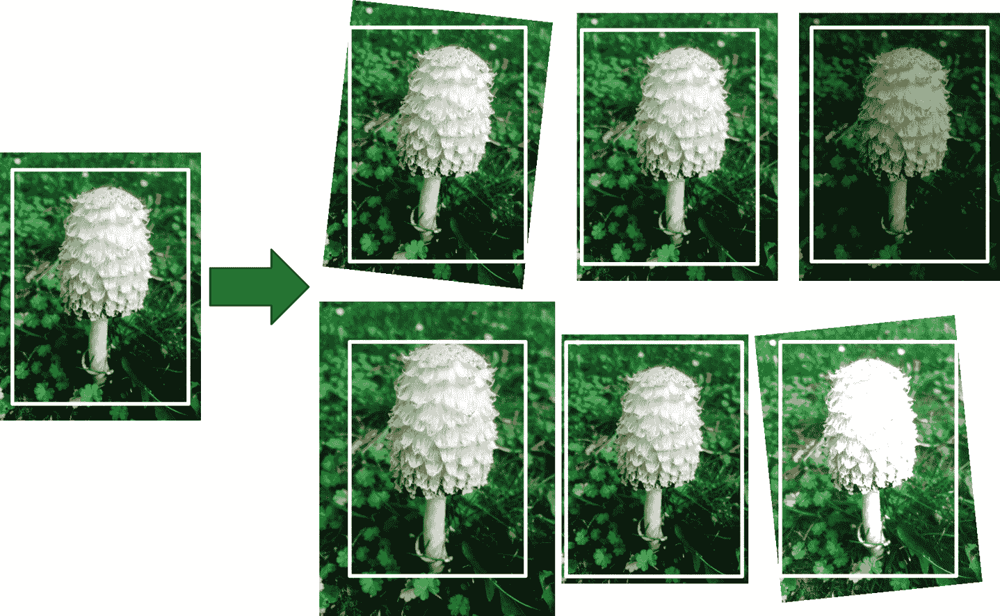
图 14-12 从原生图生成新的训练实例
AlexNet 还在 C1 和 C3 层的 ReLU 之后
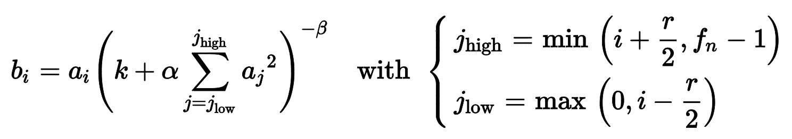
公式 14-2 局部响应归一化
这这个等式中
-
b[I]是特征映射i的行u列v的神经元的归一化输出（ u列v） 。 -
a[I]是 ReLu 之后， 。 -
k、 α、 β和r是超参。 k是偏置项， r是深度半径。 -
f[n]是特征映射的数量。
例如r=2
在 AlexNet 中r = 2α = 0.00002β = 0.75k = 1tf.nn.local_response_normalization()函数实现Lambda层
AlexNet 的一个变体是 ZF Net
GoogLeNet
GoogLeNet 架构是 Google Research 的 Christian Szegedy 及其同事发明的
图 14-13 展示了一个创始模块的架构3 × 3 + 1(S)的意思是层使用的核是3 × 3"same"填充1 × 13 × 35 × 5tf.concat()实现axis=3
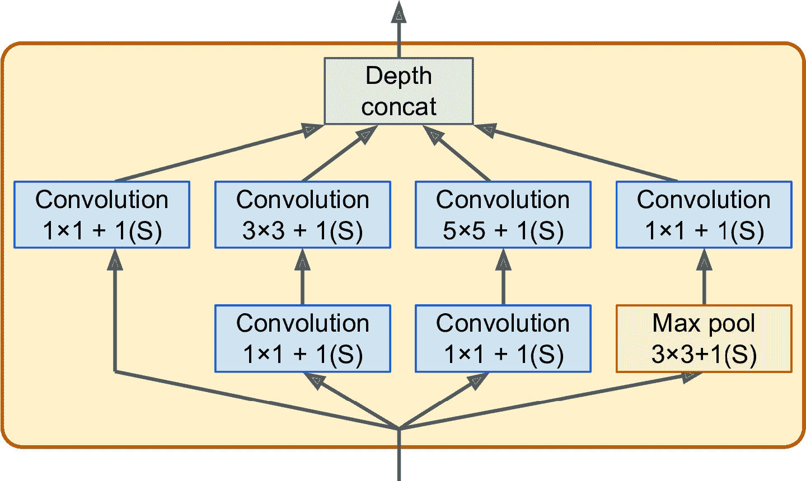
图 14-13 创始模块
为什么创始模块有核为1 × 1的卷积层呢
-
尽管不能捕捉空间图案
， 。 -
这些曾输出的特征映射比输入少
， ， 。 、 ， 。 -
每一对卷积层
（ ） ， 。 ， 。
总而言之
警告
每个卷积层的卷积核的数量是一个超参数 ： 但是 。 这意味着每添加一个创始层 ， 就多了 6 个超参数 ， 。
来看下 GoogLeNet 的架构
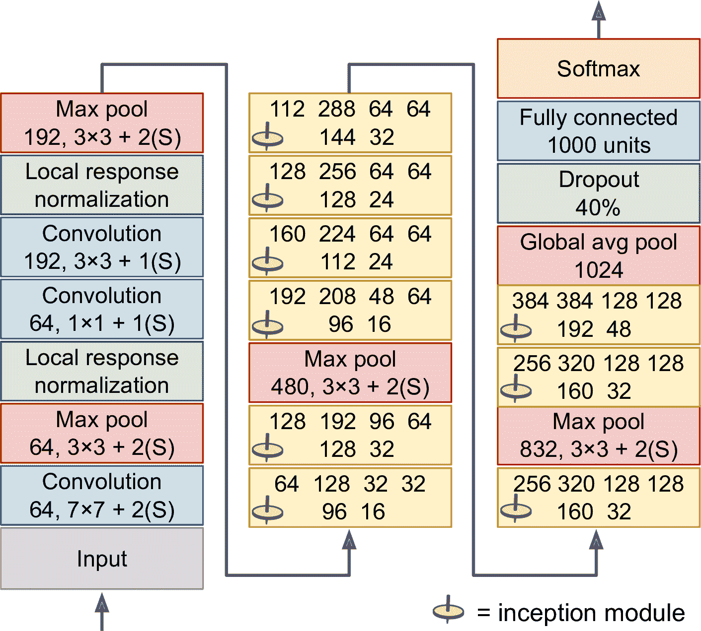
图 14-14 GoogLeNet 的架构
这个网络的结构如下
-
前两个层将图片的高和宽除以了 4
（ ） ， 。 ， 。 -
接下来
， 。 -
后面跟着两个卷积层
， 。 。 -
然后
， 。 -
接着
， ， 。 -
然后
， ， ， 。 -
接着
， ： ， 。 224 × 224像素的， ， ， 7 × 7。 ， ， ， 。 ， （ ） ， ， 。 -
最后几层很明白
： ， （ ， ） 。
架构图经过轻微的简化
Google 的研究者后来又提出了几个 GoogLeNet 的变体
VGGNet
ILSVRC 2014 年的亚军是 VGGNet3 × 3的过滤器
ResNet
何凯明使用残差网络
当训练神经网络时h(x)建模x添加给网络的输出f(x) = h(x) – x建模h(x)
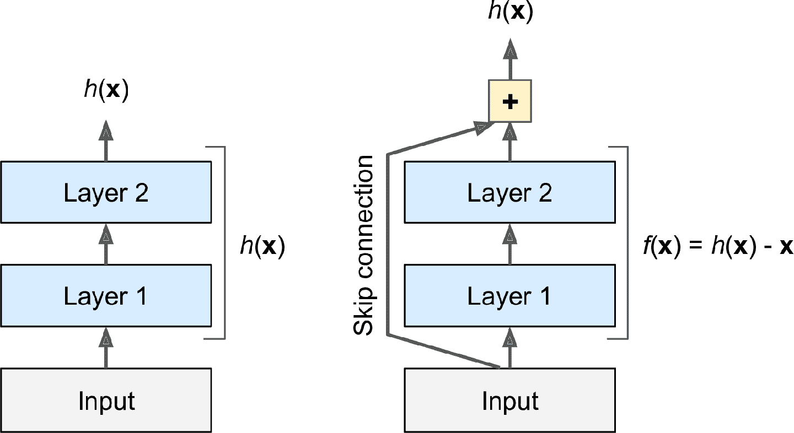
图 14-15 残差学习
初始化一个常规神经网络时
另外
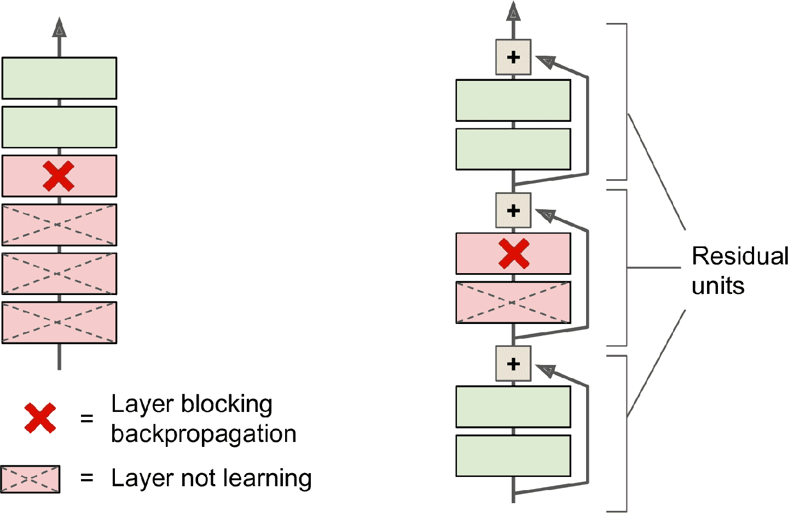
图 14-16 常规神经网络
来看看 ResNet 的架构3 × 3的核
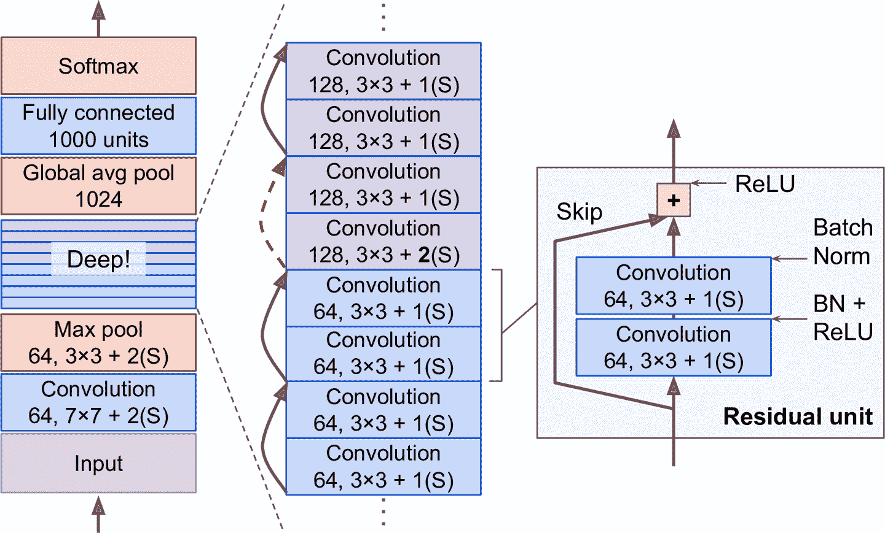
图 14-17 ResNet 架构
注意到1 × 1的卷积层
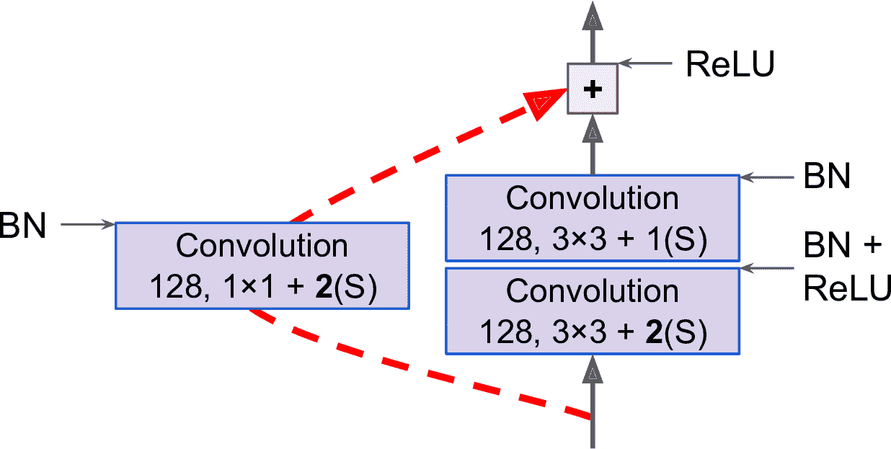
图 14-18 改变特征映射大小和深度时的跳连接
ResNet-34 是有 34 个层
ResNet 通常比这个架构要深3 × 3的输出 256 个特征映射的卷积层1 × 1的卷积层1 × 1的卷积层1 × 1的卷积层
笔记
Google 的 Inception-v4 融合了 GoogLeNet 和 ResNet ： 使 ImageNet 的 top-5 误差率降低到接近 3% ， 。
Xception
另一个 GoogLeNet 架构的变体是 Xception1 × 1的常规卷积层
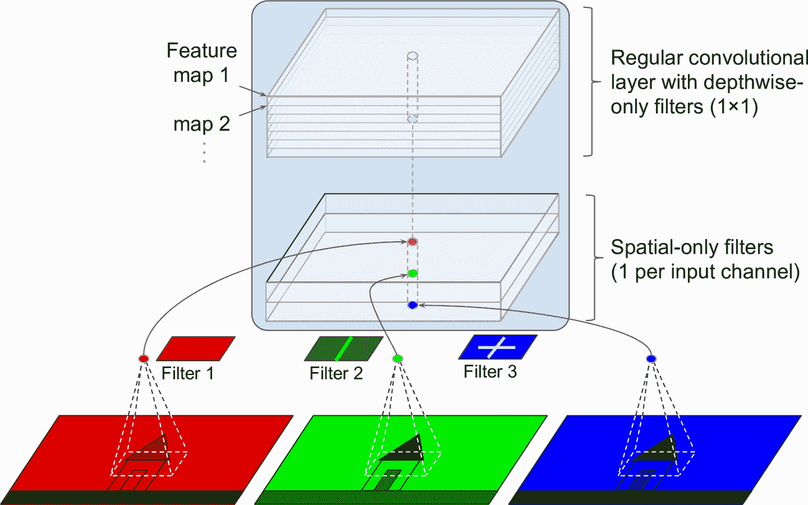
图 14-19 深度可分卷积层
因为可分卷积层对每个输入通道只有一个空间过滤器
为什么 Xception 是 GoogLeNet 的变体呢1 × 1的卷积层
提示
相比于常规卷积层 ： 可分卷积层使用的参数 ， 内存 、 算力更少 、 性能也更好 ， 所以应默认使用后者 ， 除了通道不多的层 （ ） 。
ILSVRC 2016 的冠军是香港中文大学的 CUImage 团队
SENet
ILSVRC 2017 年的冠军是挤压-激活网络
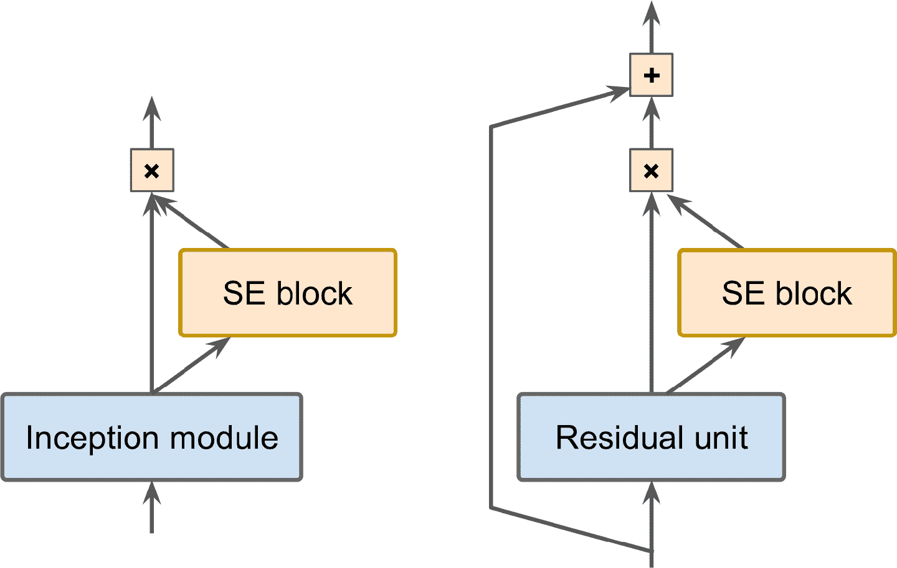
图 14-20 SE-创始模块
SE 分析了单元输出
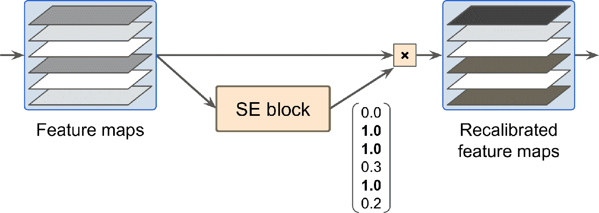
图 14-21 SE 快做特征重调
SE 块由三层组成
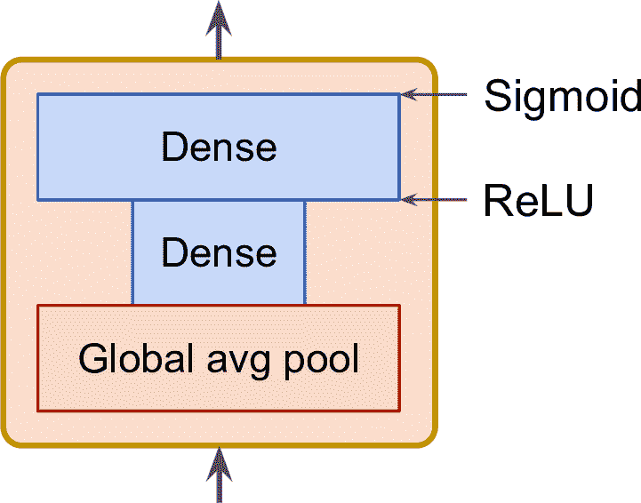
图 14-22 SE 块的结构
和之前一样
用 Karas 实现 ResNet-34 CNN
目前为止介绍的大多数 CNN 架构的实现并不难ResidualUnit层
class ResidualUnit(keras.layers.Layer):
def __init__(self, filters, strides=1, activation="relu", **kwargs):
super().__init__(**kwargs)
self.activation = keras.activations.get(activation)
self.main_layers = [
keras.layers.Conv2D(filters, 3, strides=strides,
padding="same", use_bias=False),
keras.layers.BatchNormalization(),
self.activation,
keras.layers.Conv2D(filters, 3, strides=1,
padding="same", use_bias=False),
keras.layers.BatchNormalization()]
self.skip_layers = []
if strides > 1:
self.skip_layers = [
keras.layers.Conv2D(filters, 1, strides=strides,
padding="same", use_bias=False),
keras.layers.BatchNormalization()]
def call(self, inputs):
Z = inputs
for layer in self.main_layers:
Z = layer(Z)
skip_Z = inputs
for layer in self.skip_layers:
skip_Z = layer(skip_Z)
return self.activation(Z + skip_Z)
可以看到call()方法中
然后Sequential模型搭建 ResNet-34
model = keras.models.Sequential()
model.add(keras.layers.Conv2D(64, 7, strides=2, input_shape=[224, 224, 3],
padding="same", use_bias=False))
model.add(keras.layers.BatchNormalization())
model.add(keras.layers.Activation("relu"))
model.add(keras.layers.MaxPool2D(pool_size=3, strides=2, padding="same"))
prev_filters = 64
for filters in [64] * 3 + [128] * 4 + [256] * 6 + [512] * 3:
strides = 1 if filters == prev_filters else 2
model.add(ResidualUnit(filters, strides=strides))
prev_filters = filters
model.add(keras.layers.GlobalAvgPool2D())
model.add(keras.layers.Flatten())
model.add(keras.layers.Dense(10, activation="softmax"))
这段代码中唯一麻烦的地方ResidualUnit层的循环部分ResidualUnitprev_filters
不到 40 行代码就能搭建出 ILSVRC 2015 年冠军模型
使用 Keras 的预训练模型
通常来讲keras.applications中已经包含这些预训练模型了
model = keras.applications.resnet50.ResNet50(weights="imagenet")
仅此而已224 × 224像素的图片299 × 299tf.image.resize()函数来缩放图片
images_resized = tf.image.resize(images, [224, 224])
提示
： tf.image.resize()不会保留宽高比如果需要 。 可以裁剪图片为合适的宽高比之后 ， 再进行缩放 ， 两步可以通过 。 tf.image.crop_and_resize()来实现。
预训练模型的图片要经过特别的预处理preprocess_input()函数
inputs = keras.applications.resnet50.preprocess_input(images_resized * 255)
现在就可以用预训练模型做预测了
Y_proba = model.predict(inputs)
和通常一样Y_proba是一个矩阵decode_predictions()函数
top_K = keras.applications.resnet50.decode_predictions(Y_proba, top=3)
for image_index in range(len(images)):
print("Image #{}".format(image_index))
for class_id, name, y_proba in top_K[image_index]:
print(" {} - {:12s} {:.2f}%".format(class_id, name, y_proba * 100))
print()
输出如下
Image #0
n03877845 - palace 42.87%
n02825657 - bell_cote 40.57%
n03781244 - monastery 14.56%
Image #1
n04522168 - vase 46.83%
n07930864 - cup 7.78%
n11939491 - daisy 4.87%
正确的类monastery和daisy
可以看到keras.applications中其它视觉模型还有几种 ResNet 的变体
如果要使用的图片分类器不是给 ImageNet 图片做分类的呢
使用预训练模型做迁移学习
如果想创建一个图片分类器
import tensorflow_datasets as tfds
dataset, info = tfds.load("tf_flowers", as_supervised=True, with_info=True)
dataset_size = info.splits["train"].num_examples # 3670
class_names = info.features["label"].names # ["dandelion", "daisy", ...]
n_classes = info.features["label"].num_classes # 5
可以通过设定with_info=True来获取数据集信息"train"训练集
test_split, valid_split, train_split = tfds.Split.TRAIN.subsplit([10, 15, 75])
test_set = tfds.load("tf_flowers", split=test_split, as_supervised=True)
valid_set = tfds.load("tf_flowers", split=valid_split, as_supervised=True)
train_set = tfds.load("tf_flowers", split=train_split, as_supervised=True)
然后224 × 224的图片preprocess_input()函数来预处理图片
def preprocess(image, label):
resized_image = tf.image.resize(image, [224, 224])
final_image = keras.applications.xception.preprocess_input(resized_image)
return final_image, label
对三个数据集使用这个预处理函数
batch_size = 32
train_set = train_set.shuffle(1000)
train_set = train_set.map(preprocess).batch(batch_size).prefetch(1)
valid_set = valid_set.map(preprocess).batch(batch_size).prefetch(1)
test_set = test_set.map(preprocess).batch(batch_size).prefetch(1)
如果想做数据增强tf.image.random_crop()随机裁剪图片tf.image.random_flip_left_right()做随机水平翻转
提示
： keras.preprocessing.image.ImageDataGenerator可以方便地从硬盘加载图片并用多种方式来增强 ， 偏移 ： 旋转 、 缩放 、 翻转 、 裁剪 、 或使用任何你想做的转换 ， 对于简单项目 。 这么做很方便 ， 但是 。 使用 ， tf.data管道的好处更多从任何数据源高效读取图片 ： 例如 （ 并行 ， ） 操作数据集 ； 如果基于 ； tf.image运算编写预处理函数既可以用在 ， tf.data管道中也可以用在生产部署的模型中 ， 见第 19 章 （ ） 。
然后加载一个在 ImageNet 上预训练的 Xception 模型include_top=False
base_model = keras.applications.xception.Xception(weights="imagenet",
include_top=False)
avg = keras.layers.GlobalAveragePooling2D()(base_model.output)
output = keras.layers.Dense(n_classes, activation="softmax")(avg)
model = keras.Model(inputs=base_model.input, outputs=output)
第 11 章介绍过
for layer in base_model.layers:
layer.trainable = False
笔记
因为我们的模型直接使用了基本模型的层 ： 而不是 ， base_model对象设置 ， base_model.trainable=False没有任何效果。
最后
optimizer = keras.optimizers.SGD(lr=0.2, momentum=0.9, decay=0.01)
model.compile(loss="sparse_categorical_crossentropy", optimizer=optimizer,
metrics=["accuracy"])
history = model.fit(train_set, epochs=5, validation_data=valid_set)
警告
训练过程非常慢 ： 除非使用 GPU ， 如果没有 GPU 。 应该在 Colab 中运行本章的笔记本 ， 使用 GPU 运行时 ， 是免费的 （ ！ ） 见这里 。 。
模型训练几个周期之后
for layer in base_model.layers:
layer.trainable = True
optimizer = keras.optimizers.SGD(lr=0.01, momentum=0.9, decay=0.001)
model.compile(...)
history = model.fit(...)
训练要花不少时间
分类和定位
第 10 章讨论过
base_model = keras.applications.xception.Xception(weights="imagenet",
include_top=False)
avg = keras.layers.GlobalAveragePooling2D()(base_model.output)
class_output = keras.layers.Dense(n_classes, activation="softmax")(avg)
loc_output = keras.layers.Dense(4)(avg)
model = keras.Model(inputs=base_model.input,
outputs=[class_output, loc_output])
model.compile(loss=["sparse_categorical_crossentropy", "mse"],
loss_weights=[0.8, 0.2], # depends on what you care most about
optimizer=optimizer, metrics=["accuracy"])
但现在有一个问题
假设你已经给每张图片的花都获得了边框(images, (class_labels, bounding_boxes))
提示
边框应该做归一化 ： 让中心的横坐标 ， 纵坐标 、 宽度和高度的范围变成 0 到 1 之间 、 另外 。 最好是预测高和宽的平方根 ， 而不是直接预测高和宽 ， 大边框的 10 像素的误差 ： 相比于小边框的 10 像素的误差 ， 不会惩罚那么大 ， 。
MSE 作为损失函数来训练模型效果很好tf.keras中tf.keras.metrics.MeanIoU类来实现的
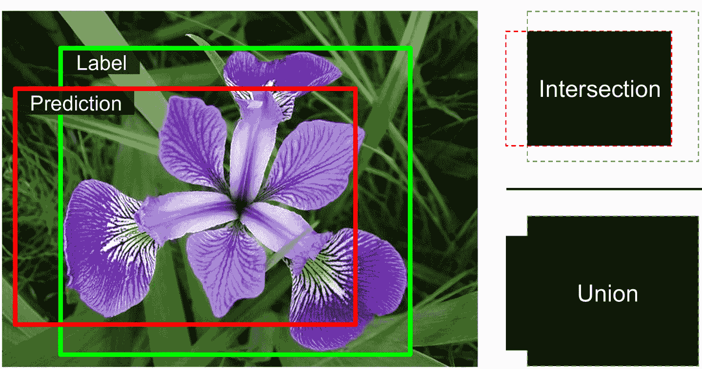
图 14-23 交并比指标
完成了分类并定位单一物体
目标检测
分类并定位图片中的多个物体的任务被称为目标检测6 × 8的网格3 × 36 × 8的区域6 × 8的区域6 × 8的区域来检测
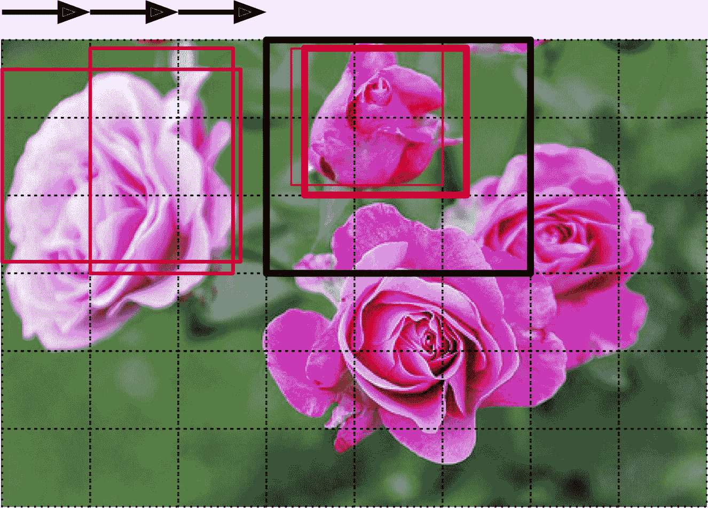
图 14-24 通过滑动 CNN 来检测多个目标
这个方法非常简单易懂
-
首先
， ， （ ， “ ” ， ） 。 ， 。 ： 。 -
找到对象性分数最高的边框
， （ ， ） 。 ， ， （ ） 。 ， 。 -
重复这两个步骤
， 。
用这个简单的方法来做目标检测的效果相当不错
全卷积层
FCN 是 Jonathan Long 在 2015 年的一篇论文汇总提出的7 × 7100 × 7 × 7个激活结果的加权和7 × 7"valid"填充7 × 7"valid"填充[批次大小, 200][批次大小, 1, 1, 200]
提示
要将紧密层变成卷积层 ： 卷积层中的过滤器的数量 ， 必须等于紧密层的神经元数 ， 过滤器大小必须等于输入特征映射的大小 ， 必须使用 ， "valid"填充步长可以是 1 或以上 。 。
为什么这点这么重要
举个例子224 × 224
现在可以将紧密层转换为卷积层
当输入图片为224 × 224时224 × 224的特征映射448 × 448224 × 224的特征映射224 × 224的过滤器的卷积层"valid"填充448 × 44814 – 7 + 1 = 8224 × 224的网格224 × 224的网格224 × 224的窗口在上面滑动8 × 8 = 64个可能的位置
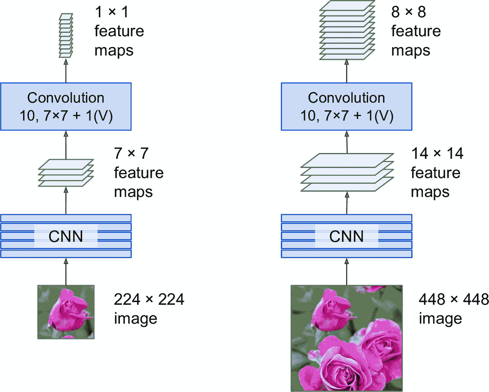
图 14-25 相同的 FCN 处理小图片
（ ） （ ）
YOLO 是一个非常快且准确的目标检测框架
YOLOv3 的架构和之前讨论过的很像
-
每个网格输出 5 个边框
（ ） ， 。 ， ， 。 ： ， ， ， 。 -
YOLOv3 不是预测边框的绝对坐标
， ， (0, 0)是网格的左上角， (1, 1)是网格的右下角。 ， （ ） 。 ， 。 -
开始训练神经网络之前
， ， （ ） （ ） 。 （ ） 。 ， ， 。 ， 。 ， ， ， ， 。 150 × 45的边框。 ， ， 。 ， ， ， 。 -
神经网络是用不同规模的图片来训练的
： ， （ 330 × 330到330 × 330像素） 。 。 ， ： 。
还可能有些有意思的创新
平均精度均值
mean Average Precision （ mAP ， ） 目标检测中非常常见的指标是平均精度均值
。 平均均值 “ 听起来啰嗦了 ” 要弄明白这个指标 。 返回到第 3 章中的两个分类指标 ， 精确率和召回率 ： 取舍关系 。 召回率越高 ： 精确率就越低 ， 可以在精确率/召回率曲线上看到 。 将这条曲线归纳为一个数 。 可以计算曲线下面积 ， AUC （ ） 但精确率/召回率曲线上有些部分 。 当精确率上升时 ， 召回率也上升 ， 特别是当召回率较低时 ， 可以在图 3-5 的顶部看到 （ ） 这就是产生 mAP 的激励之一 。 。 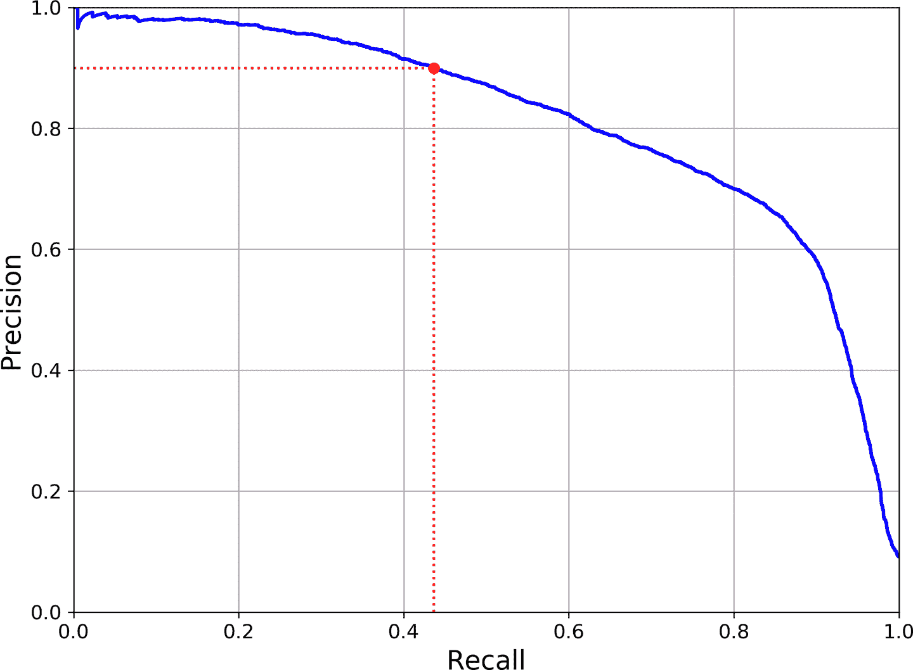
图 3-5 精确率 vs 召回率
假设当召回率为 10% 时
分类器的精确率是 90% ， 召回率为 20% 时 ， 精确率是 96% ， 这里就没有取舍关系 。 使用召回率为 20% 的分类器就好 ： 因为此时精确率更高 ， 所以当召回率至少有 10% 时 。 需要找到最高精确率 ， 即 96% ， 因此 。 一个衡量模型性能的方法是计算召回率至少为 0% 时 ， 计算最大精确率 ， 再计算召回率至少为 10% 时的最大精确率 ， 再计算召回率至少为 20% 时的最大精确率 ， 以此类推 ， 最后计算这些最大精确率的平均值 。 这个指标称为平均精确率 ， Average Precision （ AP ， ） 当有超过两个类时 。 可以计算每个类的 AP ， 然后计算平均 AP ， 即 （ mAP ， ） 就是这样 。 ！ 在目标检测中
还有另外一个复杂度 ， 如果系统检测到了正确的类 ： 但是定位错了 ， 即 （ 边框不对 ， ） 当然不能将其作为正预测 ？ 一种方法是定义 IOU 阈值 。 例如 ： 只有当 IOU 超过 0.5 时 ， 预测才是正确的 ， 相应的 mAP 表示为 mAP@0.5 。 或 mAP@50% （ 或 AP50 ， ） 在一些比赛中 。 比如 PASCAL VOC 竞赛 （ ） 就是这么做的 ， 在其它比赛中 。 比如 （ COCO ， ） mAP 是用不同 IOU 阈值 ， 0.50, 0.55, 0.60, …, 0.95 （ 计算的 ） 最终指标是所有这些 mAP 的均值 。 表示为 AP@[.50:.95] 或 AP@[.50:0.05:.95] （ ） 这是均值的均值 ， 。
一些 YOLO 的 TensorFlow 实现可以在 GitHub 上找到
检测系统的选择取决于许多因素
语义分割
在语义分割中
和目标检测一样
图 14-26 语义分割
有几种上采样×4或×8时好用1/2tf.keras中Conv2DTranspose层
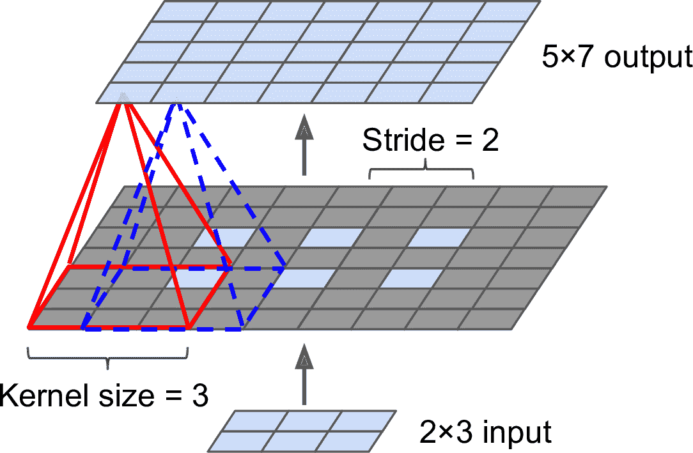
图 14-27 使用转置卷积层做上采样
笔记
在转置卷积层中 ： 步长定义为输入图片被拉伸的倍数 ， 而不是过滤器步长 ， 所以步长越大 。 输出也就越大 ， 和卷积层或池化层不同 （ ） 。
TensorFlow 卷积运算
TensorFlow 还提供了一些其它类型的卷积层
：
keras.layers.Conv1D为 1D 输入创建卷积层 ： 比如时间序列或文本 ， 第 15 章会见到 ， 。
keras.layers.Conv3D为 3D 输入创建卷积层 ： 比如 3D PET 扫描 ， 。
dilation_rate将任何卷积层的 ： dilation_rate超参数设为 2 或更大可以创建有孔卷积层 ， 等价于常规卷积层 。 加上一个膨胀的 ， 插入了空白行和列的过滤器 、 例如 。 一个 ， 1 × 3的过滤器[[1,2,3]]膨胀 4 倍 ， 就变成了 ， [[1, 0, 0, 0, 2, 0, 0, 0, 3]]这可以让卷积层有一个更大的感受野 。 却没有增加计算量和额外的参数 ， 。
tf.nn.depthwise_conv2d()可以用来创建深度方向卷积层 ： 但需要自己创建参数 （ ） 它将每个过滤器应用到每个独立的输入通道上 。 因此 。 因此 ， 如果有 ， f[n]个过滤器和f[n']个输入通道就会输出 ， f[n] x f[n']个特征映射。
这个方法行得通
总之×2×2×8
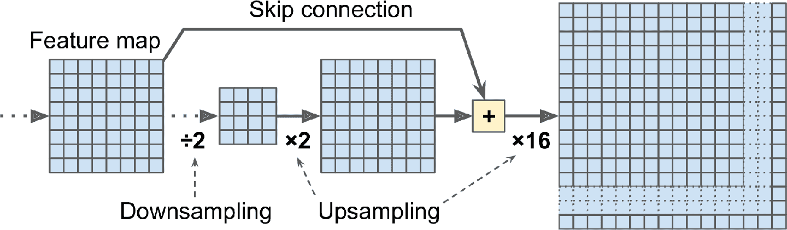
图 14-28 跳连接可以从低层恢复一些空间分辨率
许多 GitHub 仓库提供了语义分割的 TensorFlow 实现
可以发现
练习
-
对于图片分类
， ？ -
考虑一个 CNN
， ， 3 × 3的核， ， 。 ， ， 。 3 × 3像素的 RGB 图。 ？ ， ？ ， ？ -
如果训练 CNN 时 GPU 内存不够
， ？ -
为什么使用最大池化层
， ？ -
为什么使用局部响应归一化层
？ -
AlexNet 想对于 LeNet-5 的创新在哪里
？ 、 、 、 ？ -
什么是全卷积网络
？ ？ -
语义分割的主要技术难点是什么
？ -
从零搭建你的 CNN
， 。 -
使用迁移学习来做大图片分类
， ：
a. 创建每个类至少有 100 张图片的训练集
b. 将其分成训练集
c. 搭建输入管道
d. 在这个数据集上
- 尝试下 TensorFlow 的风格迁移教程
。 。